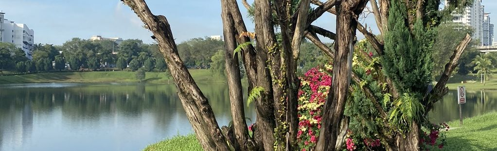
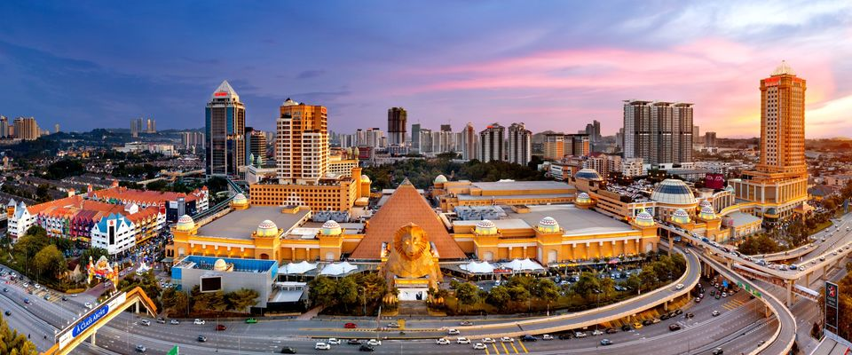
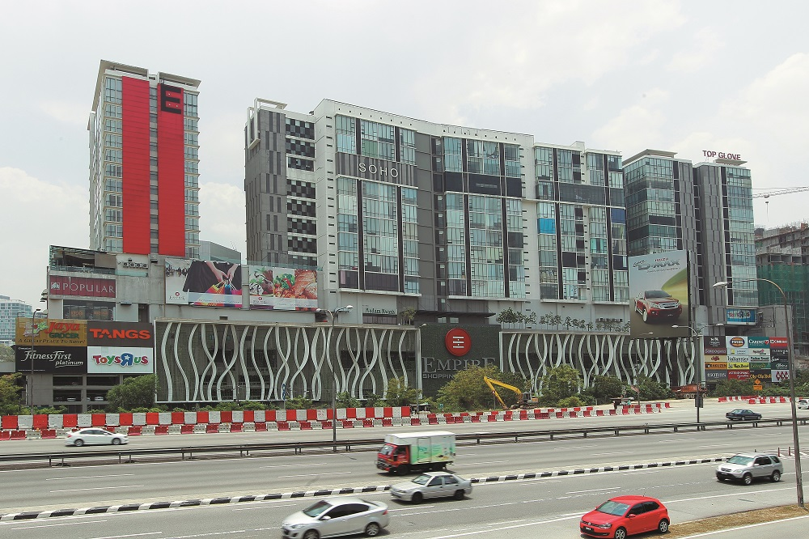
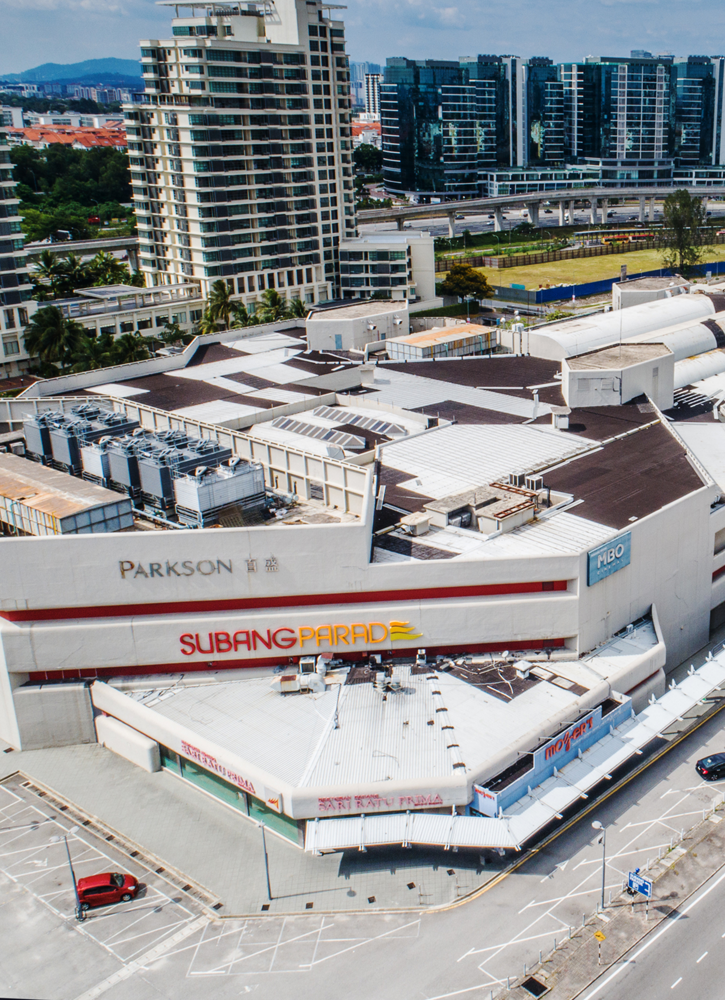
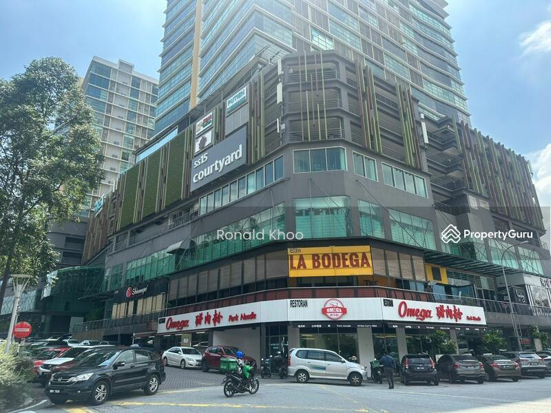
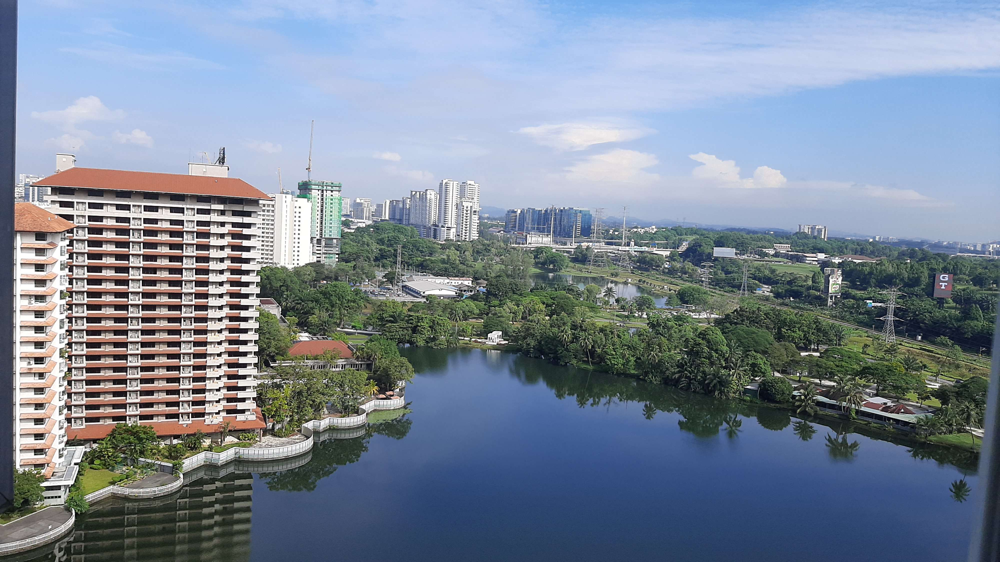

Located in the heart of Selangor, it's hard to believe that Subang Jaya is a city. With its relaxed atmosphere and quiet areas, it's a refreshing escape from the hustle and bustle of the Klang Valley.
At SS12, the conveniently placed Subang Jaya Medical Centre boasts the stunning Subang Ria Park. This beautiful display of greenery includes a running track, multiple fitness devices and a lake large enough to fish in. A perfect example of Subang's tranquil environment!
Of course, you can't leave out the stunning yellow buildings of Sunway City. Or to be exact, its mall: Sunway Pyramid. Hundreds of stores and restaurants, plus walkways to access the entire area. It's a dream to be nearby such a place.
Don't worry if Sunway seems too busy for you, there's also more cosier malls to shop in. From Empire Shopping Gallery, Subang Parade and even the newly opened SS15 Courtyard, there's always a variety of places to choose.
  If you want a place to stay, Subang's got you covered! From houses in the USJ area, bungalows nearby Sri Kuala Lumpur International School and even our numerous condominiums, there's countless options available! Best of all, all of them are connected by 7 LRT stations in the area:
My area in particular, Wangsa Baiduri, is a 0.2 km² wide residential area laden with condominiums, a healthy dosage of trees and wildlife, as well as its very own lake, right beside Subang Ria park! It's a stunning view to take in every morning.
Also, play this music to set the mood:
Song used: Highway, Quruli